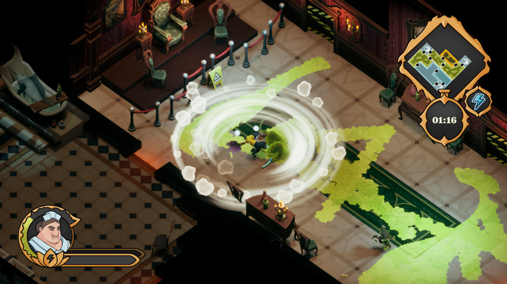
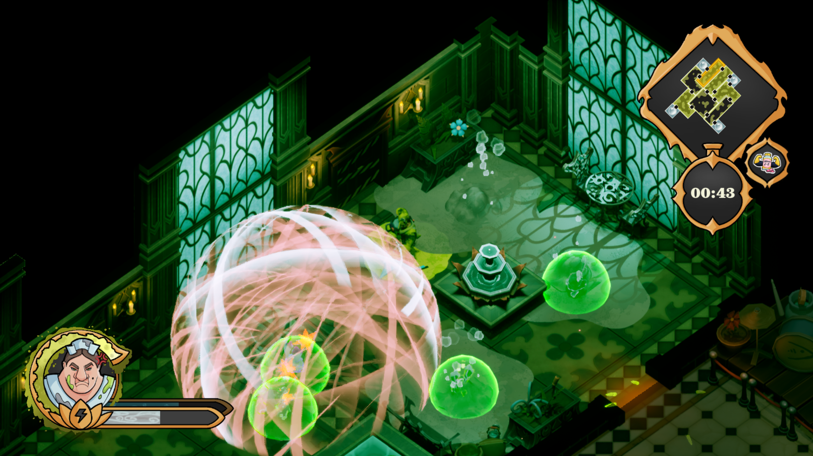

About the game
Dorothy's Job is a fast-paced isometric twin-stick shooter starring Dorothy, a buff maid
tasked with maintaining a Dark Lord's mansion. Master a high-stakes gameplay loop that forces you to balance heavy-duty cleaning
with intense combat, all while racing against time.
This game was developed during a 10 month period by the team Bola 13 Studios.
Throughout this time, I've taken the roles of both Game Designer and Producer for the whole development while I also helped as a 2D Artist a few
months pre-launch.
Dorothy's Job Trailer
Roles
Producer
KEY RESPONSIBILITIES
• Coordinated a core 20 people team through the whole proccess of making a game from scratch.
• Planned and organized departmental and interdepartmental meetings to ensure project milestones were met on time.
• Reviewed project scope and prioritized objectives iteratively to ensure the game would be launched according to plan.
• Resolved internal an cross-department conflicts, facilitating a collaborative work environment.
ROLE BREAKDOWN:
As Producer, I coordinated the team from the very start of the project.The first months we created a production team which ensured the team selected an idea amongst all the brainstormed ones after rating them based on the teams interests during development.
This was particularly important because some of the hardest challenges for the whole team were defined due to the game that Dorothy's Job came to be since the very begginning.
The procedurally generated level system, how to show the different types of dirt on the floor, keeping the twin-stick genre core mechanics adjusting them to a cleaning-like gameplay...
All these things repercuted in the game's development roadmap and made us constantly reconsider the game's scope.
• The procedural level generator tool was a requirement from the programming team which challenged them to have it on time
for release, and forced the production team to have constant backup plans in case it didn't meet the quality standards.
• Visibility carried though decisions. The two types of dirt planned for the game (liquid and dust) needed to be shown on the floor, and must be visible through all
the different enemies, bullets and status effects, the UI. That created some disagreements, discussions and iterations throughout the
development in which production needed to adress and mediate.
• Had to evaluate the productivity of team members to ensure there were no bottlenecks and to detect potential problems, for example
stopping iterative processes on time so some features didn't need to be delayed.
Additional Information
Technical Stack & Tools
For this project, we utilized Unreal Engine 5 as the core engine, using Blueprints for rapid prototyping and C++ for the procedural generator optimization.
- Version Control: Perforce (Helix Core)
- Task Management: Jira & Confluence
- Design: Figma for UI Mockups
Challenges & Solutions
One of the biggest hurdles was the visibility system. With so many enemies and dirt types, the screen could become cluttered. We solved this by implementing a custom shader that outlines key interactive elements when they are covered by VFX.

Game Designer
KEY RESPONSIBILITIES
• Designed and iterated on the game's core mechanics.
• Tested and created a gameplay loop focused on the combination of cleaning and combat.
• Collaborated with programming and art teams to implement mechanics according to design's vision.
• Documented design decisions and system features to ensure alignment across departments.
ROLE BREAKDOWN:
As Game Designer, I was part of team of 6. We picked up the game since the brainstorming phase and starting developing the game concept into gameplay. Since the game idea came from the main character, Dorothy, the whole game needed to circle around a buff cleaning maid.The nature of the game made us have to take some concessions in what twin-sticks shooters are and some mechanics which are common in this genre. For example, given that Dorothy is supposed to clean the mansion, props couldn't break by player actions and leave debris.
This was particularly important because some of the hardest challenges for the whole team were defined due to the game that Dorothy's Job came to be since the very begginning.
The procedurally generated level system, how to show the different types of dirt on the floor, keeping the twin-stick genre core mechanics adjusting them to a cleaning-like gameplay...
All these things repercuted in the game's development roadmap and made us constantly reconsider the game's scope.
• The procedural level generator tool was a requirement from the programming team which challenged them to have it on time
for release, and forced the production team to have constant backup plans in case it didn't meet the quality standards.
• Visibility carried though decisions. The two types of dirt planned for the game (liquid and dust) needed to be shown on the floor, and must be visible through all
the different enemies, bullets and status effects, the UI. That created some disagreements, discussions and iterations throughout the
development in which production needed to adress and mediate.
• Had to evaluate the productivity of team members to ensure there were no bottlenecks and to detect potential problems, for example
stopping iterative processes on time so some features didn't need to be delayed.
